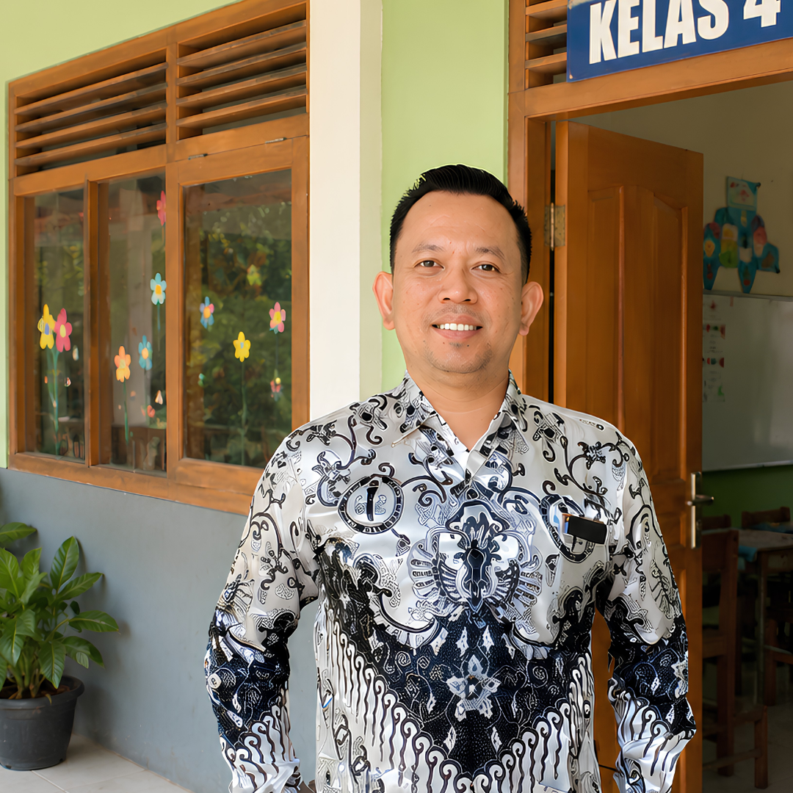
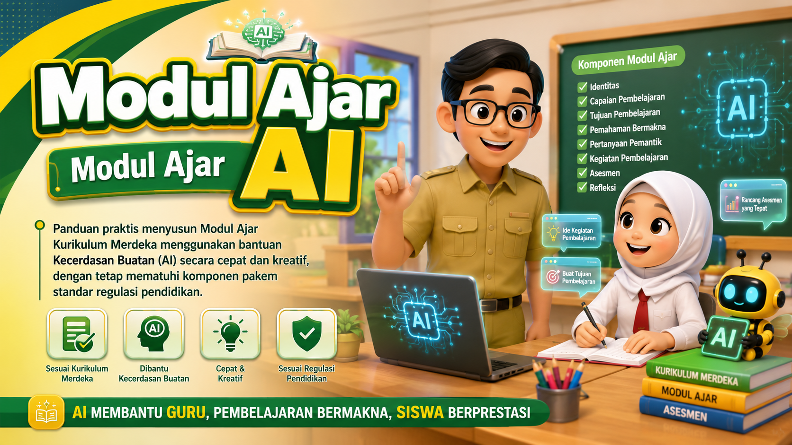
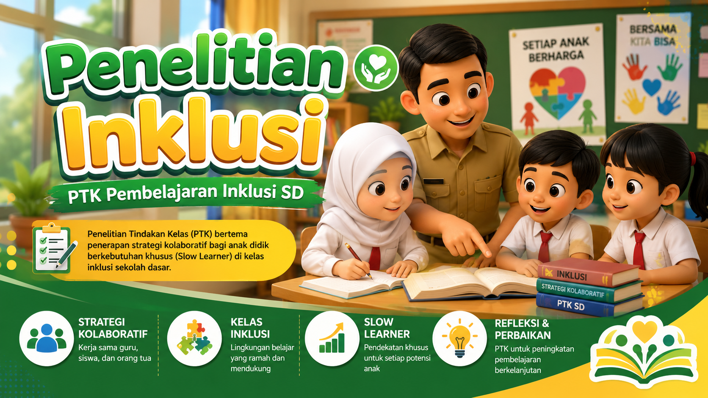
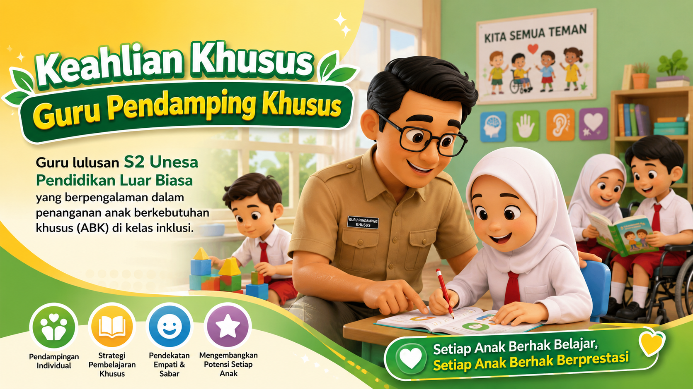

Ringkasan Pengalaman
Peran & Capaian Utama
Galeri Foto & Dokumentasi
FUDAK WINDUKO, SH., M.Pd. — Portofolio Riwayat

Saya saat ini mendedikasikan diri sebagai Guru Kelas SD di SDN Candimulyo 01 Kecamatan Dolopo. Pendidik profesional berkompetensi hukum dan magister pendidikan.
Berfokus pada pengembangan media digital pembelajaran (Articulate Storyline, HTML/JS/CSS), administrasi Dapodik, serta implementasi Kurikulum Merdeka.
Tahun Mengajar
Siswa Dan Guru
Dibimbing
Karya & Publikasi
Sebagai seorang lulusan Sarjana Hukum (SH) yang kemudian menyelesaikan studi Magister Pendidikan (M.Pd.) Program Studi Pendidikan Luar Biasa, saya memiliki pendekatan kependidikan yang unik. Saya memadukan tertib administrasi hukum dengan pedagogi khusus untuk membentuk ruang kelas sekolah dasar yang ramah anak, berkeadilan, dan inklusif.
Visi saya adalah melahirkan generasi masa depan yang melek digital, berkarakter mulia, serta siap berdaya saing. Saya percaya bahwa seluruh anak didik—termasuk anak berkebutuhan khusus (ABK) di kelas inklusi—berhak mendapatkan kesempatan belajar berkualitas tanpa diskriminasi.
Dalam misi harian, saya menggabungkan pembelajaran tematik dengan teknologi terkini (seperti visual dinamis dan media interaktif bikinan sendiri) guna mempermudah pemahaman konsep ajar secara kontekstual dan adaptif bagi segenap keberagaman siswa.
Guru Profesional
Bersertifikat Pendidik
Guru Berprestasi
Kabupaten/Kota & Provinsi
Digitalisasi Sekolah
Operator & Helpdesk AKM
FASDA Digitalisasi
Fasilitator Daerah Digitalisasi
PGRI POWER
Penggerak Organisasi Guru
Juara 2 Lomba INOTEK
Kab. Madiun 2026
Guru Terinovasi
Pembelajaran Kreatif
Guru Inovatif
Metodologi & Media
Guru Penggerak
Kemendikbudristek RI
Guru Pendamping Khusus
Ahli Pedagogi Inklusi & ABK

Panduan praktis menyusun Modul Ajar Kurikulum Merdeka menggunakan bantuan Kecerdasan Buatan (AI) secara cepat dan kreatif, dengan tetap mematuhi komponen pakem standar regulasi pendidikan.

Penelitian Tindakan Kelas (PTK) bertema penerapan strategi kolaboratif bagi anak didik berkebutuhan khusus (Slow Learner) di kelas inklusi sekolah dasar.
Membimbing siswa dalam pengenalan dasar komputer, teknologi informasi, serta pengoperasian perangkat lunak digital guna meningkatkan literasi digital sejak dini.
Merancang, memprogram, dan mengembangkan media pembelajaran interaktif (HTML5/Articulate Storyline) karya sendiri untuk meningkatkan keterlibatan aktif siswa.
Publikasi tulisan ilmiah bertopik manajemen pengelolaan kelas interaktif tingkat sekolah dasar pada jurnal terakreditasi.
Menjadi narasumber tingkat kabupaten dalam pelatihan pembuatan media pembelajaran interaktif dan pengembangan konten digital kreatif bagi pendidik.

Guru lulusan S2 Unesa Pendidikan Luar Biasa yang berpengalaman dalam penanganan anak berkebutuhan khusus (ABK) di kelas inklusi.
Pemahaman KA (Kecerdasan Artfisial / AI) dalam Pembuatan RPP Menggunakan AI
Pelaksanaan workshop peningkatan mutu pendidik & tenaga kependidikan dalam pemahaman KA untuk perancangan RPP berbasis AI. Dibuka pukul 16.00 WIB di PKBM Mawar Desa Bagi, Kec. Madiun dengan 18 peserta.
Pemahaman KA (Kecerdasan Artfisial / AI) dalam Pembuatan RPP Menggunakan AI
Pelaksanaan kegiatan workshop peningkatan mutu pendidik & tenaga kependidikan berbasis Kecerdasan Artfisial (AI). Berfokus pada perancangan RPP digital interaktif, dibuka pukul 07.30 WIB di Votel Kartika Madiun dengan 24 peserta.
SDN Candimulyo 01 Kecamatan Dolopo (Aktif Mengajar)
Mendedikasikan diri penuh sebagai Guru Kelas tingkat sekolah dasar. Melaksanakan pembelajaran berbasis siswa di SDN Candimulyo 01, merancang program kelas adaptif dengan Kurikulum Merdeka, bertugas sebagai Fasilitator Daerah Digitalisasi, penggerak PGRI POWER, serta meraih Juara 2 Lomba INOTEK Kab. Madiun 2026.
SDN Ngadirejo 03 Kecamatan Wonoasri
Bertanggung jawab membimbing perkembangan proses belajar mengajar anak didik di SDN Ngadirejo 03. Mendesain aneka media ajar kreatif dan membina kompetensi sosial emosional siswa secara holistik.
Kecamatan Mejayan (Tugas Tambahan)
Menjadi ujung tombak teknis dalam mengoordinasikan kesiapan Asesmen Kompetensi Minimum (AKM) di wilayah Kecamatan Mejayan. Mengawal kelancaran sistem aplikasi ujian nasional serta menjadi jembatan pemecah masalah teknis sekolah-sekolah dasar.
SDN Bangunsari 01 Kecamatan Mejayan
Mengampu tugas ganda sebagai guru kelas dan pemegang kunci administrasi data digital di SDN Bangunsari 01. Membantu sinkronisasi Dapodik dan ditunjuk menjadi Koordinator Wilayah Mejayan bagi operator sekolah dasar sekecamatan.
SDN Bangunsari 01 Kecamatan Mejayan
Mengawali kiprah mengelola basis data pokok sekolah dasar di SDN Bangunsari 01. Mengatur validasi sistem pelaporan nasional dan memimpin koordinasi operator sekolah sekecamatan.
Universitas Negeri Surabaya (UNESA) — Program Studi Pendidikan Luar Biasa
Lulus program pascasarjana dengan fokus riset terapan di bidang kurikulum adaptif, pembelajaran berbasis projek penguatan karakter, serta implementasi strategi pendidikan inklusif bagi anak-anak didik berkebutuhan khusus.
Universitas Merdeka — Fakultas Hukum
Menempuh pendidikan hukum perdata dan tata negara. Pengetahuan perundang-undangan menjadi fondasi kokoh untuk merancang pembelajaran Pancasila dan Kewarganegaraan yang faktual.
Saya sangat terbuka untuk berdiskusi seputar inovasi media ajar, program digitalisasi sekolah dasar, narasumber workshop kependidikan, maupun konsultasi admin Dapodik.
fudakwindukoku@gmail.com
082142107586
Instansi Utama
SDN Candimulyo 01, Jawa Timur
Silakan lengkapi formulir di bawah ini untuk memulai obrolan kependidikan.